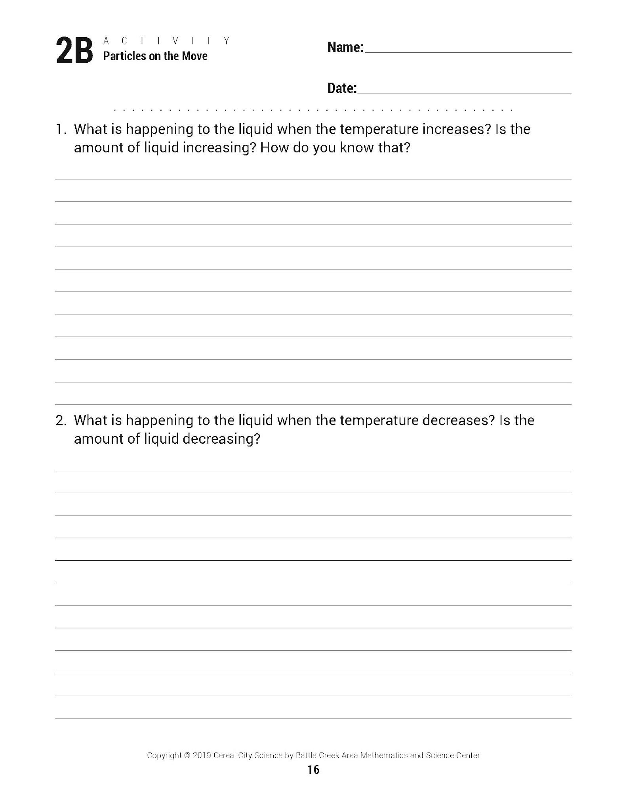
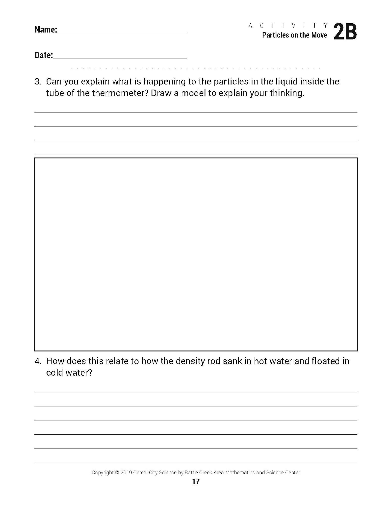
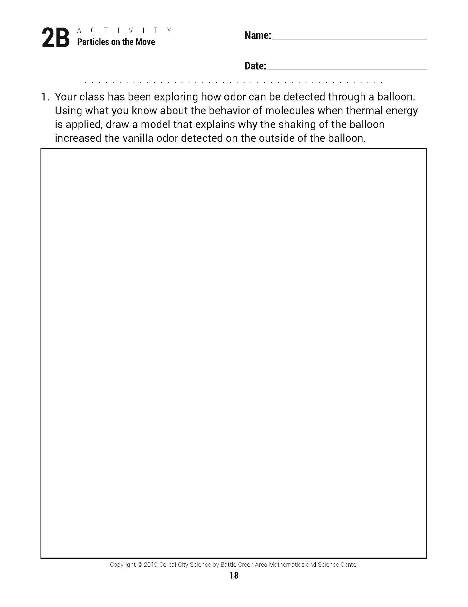
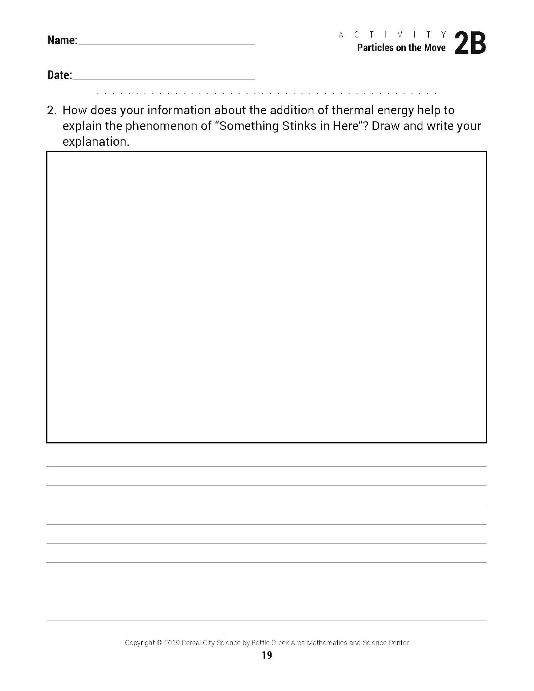

1. What is happening to the liquid when the temperature increases? Is the amount of liquid increasing? How do you know that?
2. What is happening to the liquid when the temperature decreases? Is the amount of liquid decreasing?
Student journal pages 16–19 • Select a page below to read its editable text.
1. What is happening to the liquid when the temperature increases? Is the amount of liquid increasing? How do you know that?
2. What is happening to the liquid when the temperature decreases? Is the amount of liquid decreasing?
This is the unmarked scanned page for checking original diagrams, exact wording, or layout. The editable HTML content is above.

3. Can you explain what is happening to the particles in the liquid inside the tube of the thermometer? Draw a model to explain your thinking.
4. How does this relate to how the density rod sank in hot water and floated in cold water?
This is the unmarked scanned page for checking original diagrams, exact wording, or layout. The editable HTML content is above.

1. Your class has been exploring how odor can be detected through a balloon. Using what you know about the behavior of molecules when thermal energy is applied, draw a model that explains why the shaking of the balloon increased the vanilla odor detected on the outside of the balloon.
This is the unmarked scanned page for checking original diagrams, exact wording, or layout. The editable HTML content is above.

2. How does your information about the addition of thermal energy help to explain the phenomenon of “Something Stinks in Here”? Draw and write your explanation.
This is the unmarked scanned page for checking original diagrams, exact wording, or layout. The editable HTML content is above.
